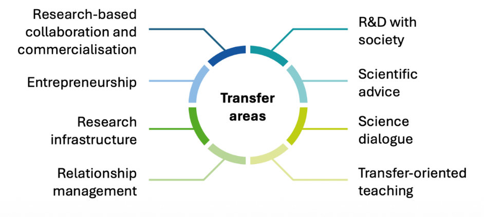

Transferlandschaft
Aus Wissen wird Wirkung.
Für alle Transferaktivitäten ist RWTH Innovation die zentrale Anlaufstelle und das operative Realisierungsinstrument — für Forschende, Gründungsteams und Unternehmen auf dem Weg in die Anwendung.
Was Transfer hier bedeutet
Transfer ist mehr als die Weitergabe fertiger Ergebnisse. Es ist ein multidimensionaler Prozess: Forschung, Lehre und Anwendung greifen ineinander — interdisziplinär in der Tiefe, transdisziplinär im Dialog mit Partnern aus Gesellschaft und Industrie.
Operativ bündelt RWTH Innovation diesen Weg: Verwertung und Schutz von Forschungsergebnissen, Gründungsbegleitung und Kooperation mit der Wirtschaft — damit aus wissenschaftlichen Ideen Anwendung, Partnerschaft und Wirkung werden.
Acht Transferfelder — so lesen Sie die Landkarte
Die Landkarte folgt der Transfersystematik des Stifterverband-Transferbarometers: acht Felder von industrie- und verwertungsnaher Kooperation bis zu Dialog, Beratung und Lehre. So wird sichtbar, wie unterschiedlich Wissen an der RWTH wirksam wird — nicht nur über Patente und Start-ups.
Getragen wird das von institutionellen Voraussetzungen: Strategie, Anreize, Strukturen und Ressourcen.

-
Forschungsbasierte Kooperation & Verwertung
Gemeinsame Forschung mit Wirtschaft und Partnern — inklusive IP, Lizenzierung und Verwertung.
-
Entrepreneurship
Wissenschaftliche Ideen werden zu Gründungen und Geschäftsmodellen — von Ideation bis Scale-up.
-
Forschungsinfrastruktur
Labore, Anlagen und Daten als geteilte Infrastruktur für Partner außerhalb der Hochschule.
-
Relationship Management
Langfristige Netzwerke mit Alumni, Fördernden und Partnern — Transfer braucht dauerhafte Beziehungen.
-
Forschen und entwickeln mit der Gesellschaft
Gemeinsame FuE mit Bürgerinnen und Bürgern, Kommunen und Zivilgesellschaft an realen Herausforderungen.
-
Wissenschaftliche Beratung
Expertise für Politik, Verwaltung und andere Entscheidungsträgerinnen und -träger.
-
Wissenschaftsdialog
Offener Austausch: Wissenschaftskommunikation und Dialog mit der Öffentlichkeit.
-
Transferorientierte Lehre & Weiterbildung
Praxis, Partner und reale Herausforderungen in Curricula, Schools und Weiterbildung.
Ambition — wohin wir wollen
-
RWTH Innovation
Zentrale Anlaufstelle und Realisierungsinstrument für Technologietransfer: individuelle Beratung, IP-Expertise, Gründungsunterstützung und maßgeschneiderte Kooperationsmodelle für Unternehmen — Innovation hat eine Adresse.
Offizielle Website → Auf der Landkarte → -
Translation Hubs
Statt linearer Technologiepfade entsteht ein kontinuierlicher Zyklus aus Entdeckung, Erprobung und gesellschaftlicher Einbettung — in strategischen Hubs für gemeinsame Entwicklung.
Auf der Landkarte → -
Campus West
Ein Ort für kollaborative Ökosysteme, in dem akademische Entdeckung mit Prototyping, Scale-up und gesellschaftlicher Anwendung zusammenkommt.
Auf der Landkarte → -
Knowledge Hub
Zentrale Schnittstelle für Wissenschaftskommunikation und Dialog — Formate, die Forschung sichtbar machen und Stakeholder einbinden.
Auf der Landkarte → -
Living Labs
Offene Reallabore, in denen Studierende, Forschende, Kommunen und Bürgerinnen und Bürger Lösungen für gesellschaftliche Herausforderungen mitentwickeln.
Auf der Landkarte → -
Forschung, Lehre und Transfer verbinden
Transfer soll nicht neben dem Kernauftrag stehen, sondern nahtlos mit Forschung und Lehre verzahnt sein — getragen von geteilter Expertise und gemeinsamen Missionen.
Auf der Landkarte →
Starten Sie bei RWTH Innovation — und entdecken Sie auf der Landkarte, wie Akteure, Orte und Transferfelder zusammenwirken.
Zu RWTH Innovation Zur Transfer-Landkarte